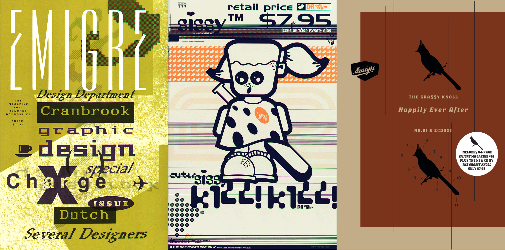
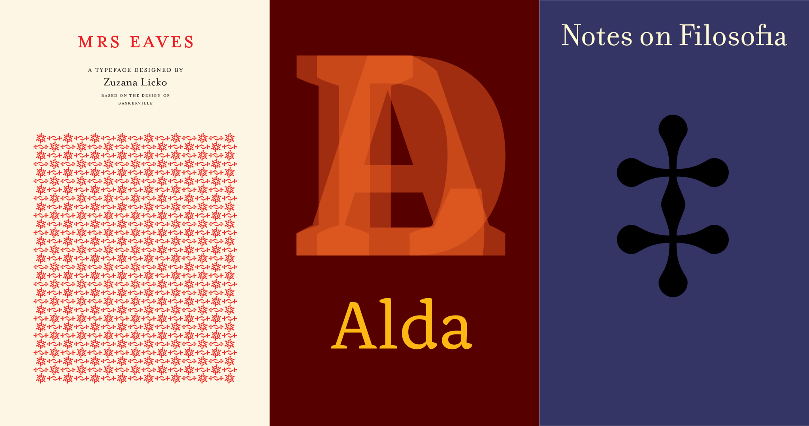

Founded in 1984 in Berkeley, California, Emigre Graphics (also known as Emigre, Inc. or Emigre Fonts) stands as one of the most influential forces in the evolution of graphic design. What began a small experimental studio became a groundbreaking independent type foundry that helped define how type was designed, and distributed in the digital era.
The story of Emigre begins with Rudy VanderLans and Zuzana Licko, a creative partnership formed at the dawn of the Macintosh computer. Graphic designer Vanderlans launched the Emigre magazine in 1984 with friends, as a quarterly devoted to innovative visual communication. Licko, who had begun creating experimental bitmap fonts on the new Macintosh, saw her typefaces featured prominently in the magazine’s layouts—starting a dialogue between typographic form and digital technology at a level never seen before.

Emigre Magazines #10, #29, and #61
As demand grew from peers who wanted to use these novel type designs themselves, Emigre organically became a digital type foundry—initially selling fonts on floppy disks and later CDs, then online—as Emigre Fonts. They were among the first independent designers to take full advantage of personal computer technology to create and distribute type without reliance on traditional foundries, a model that would influence hundreds of small type producers to follow.
Emigre’s work was not just technically pioneering but culturally provocative. Licko’s typefaces—ranging from experimental bitmap faces to more refined serif and sans designs like Mrs Eaves, Alda, Matrix, and Filosofia—were celebrated by many for their freshness and individuality, but also attacked by some traditionalists. One famous critic, designer Massimo Vignelli, dismissed Emigre as a “typographic garbage factory,” sparking debates in the design world throughout the 1990s about legibility, taste, and the future of typography.
A significant chapter in Emigre’s legacy lies in their type specimen booklets—beautifully crafted printed materials that contextualized each typeface and showcased the expressive potential of typography. As discussed in interviews archived by the Letterform Archive, these specimen booklets were not merely catalogs but creative works in their own right, reflecting the founders’ belief in the power of print even as digital distribution grew.

Type Specimen Booklets for Mrs Eaves, Alda, and Filosophia
Over decades, Emigre has received numerous awards for innovation and design, and its work has been collected by major institutions, including The Museum of Modern Art in New York, which acquired Emigre typefaces for its permanent collection—an acknowledgment of the cultural importance of what initially began as a bold, experimental venture.
Today, Emigre Fonts remains a respected name in type design, continuing to support its extensive library of original typefaces while adapting to new digital contexts—proof of a legacy that helped redefine the possibilities of graphic communication in the digital age.
Rudy Vanderlans
"Since people’s preferences vary so much it’s impossible to try and please everybody. If you would try that you’d end up somewhere in the middle and you would please everybody only minimally, or not at all. So we try to follow our own instincts, and go with what excites us."
Zuzana Licko
"The most popular typefaces are the easiest to read; their popularity has made them disappear from conscious cognition. It becomes impossible to tell if they are easy to read because they are commonly used, or if they are commonly used because they are easy to read."